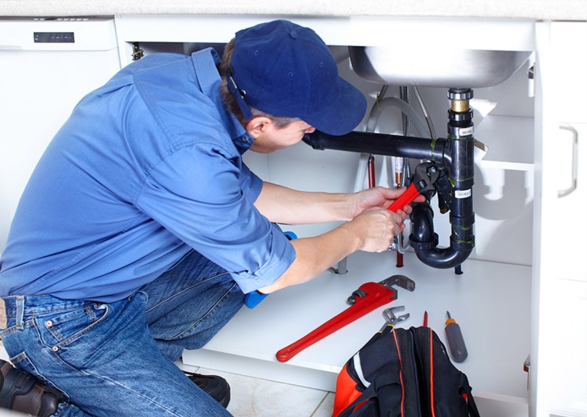
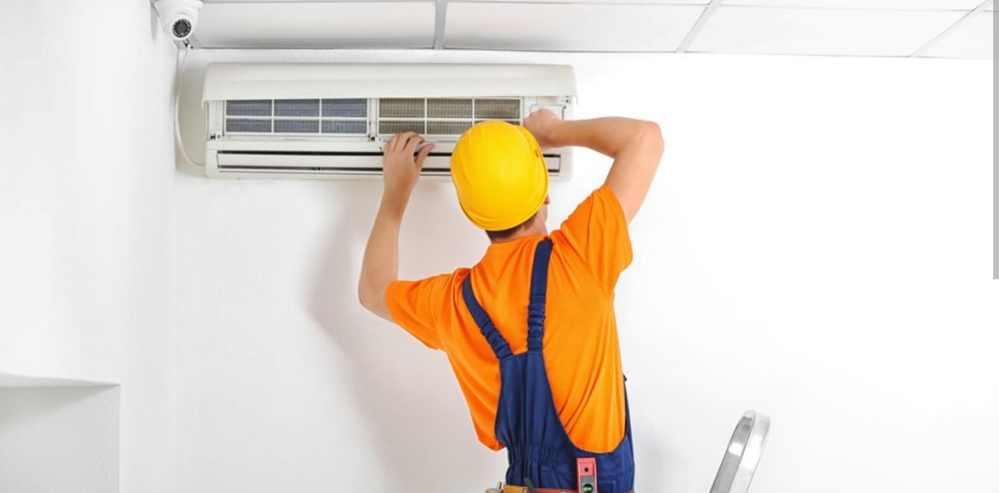
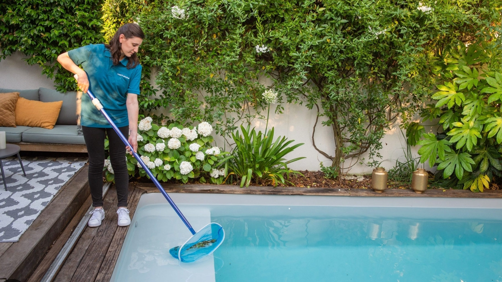
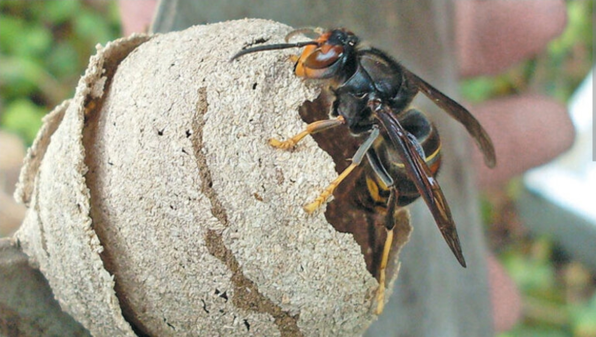

Urgence Dépannage 66 : Perpignan, Canet, Collioure, Argelès
Ne restez pas dans l'urgence. Nos artisans locaux certifiés interviennent chez vous rapidement sur Perpignan, Canet-en-Roussillon, Collioure, Argelès-sur-Mer et alentours.
✔️ Devis clair avant intervention | ✔️ Artisans locaux
Quelle est votre urgence ?

Plomberie & Chauffage
Fuite d'eau, canalisation bouchée, panne de chaudière.
Intervention Rapide ➔
Électricité
Panne de courant, court-circuit, tableau électrique.
Intervention Rapide ➔
Climatisation
Panne de clim, recharge de gaz, réparation PAC.
Intervention Rapide ➔
Pisciniste
Pompe en panne, eau verte, fuite local technique.
Intervention Rapide ➔
Assainissement & Débouchage
Refoulement, canalisation engorgée, vidange fosse.
Intervention Rapide ➔
Nids de Frelons
Destruction d'urgence frelons asiatiques, guêpes.
Intervention Rapide ➔Volets & Serrurerie
Volet roulant bloqué, porte claquée ou perte de clés.
Intervention Rapide ➔
Vitrier
Bris de glace, vitrine cassée, sécurisation effraction.
Intervention Rapide ➔
Couvreur & Toiture
Fuite de toiture, infiltration d'eau, bâche d'urgence.
Intervention Rapide ➔
Nettoyage Après Sinistre
Remise en état après incendie, dégât des eaux, inondation.
Intervention Rapide ➔